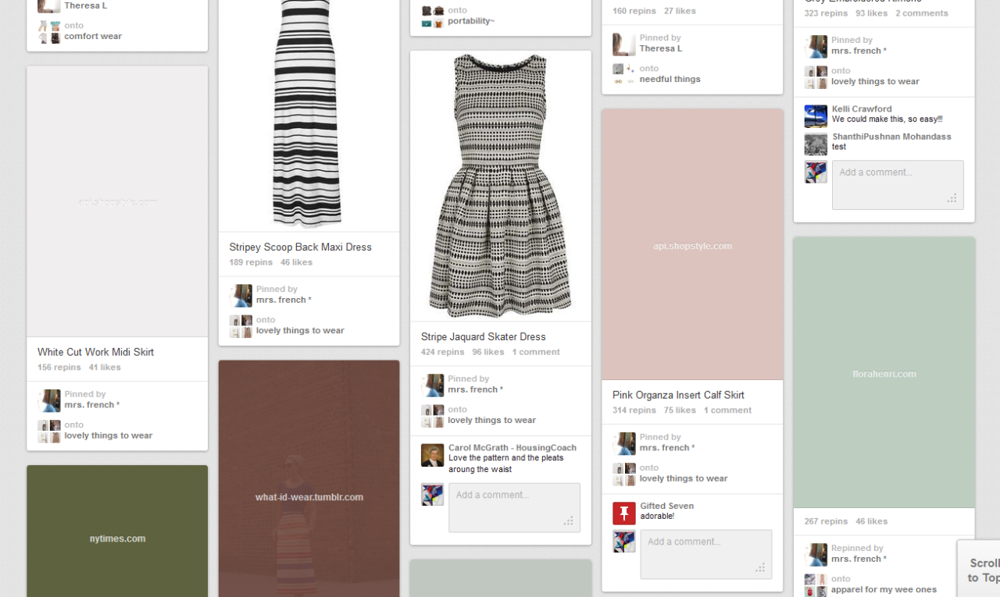
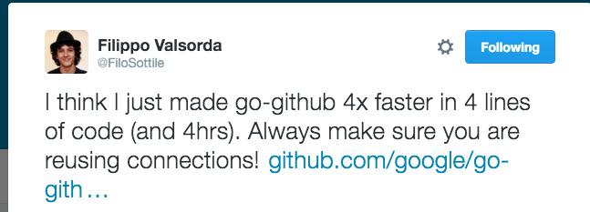
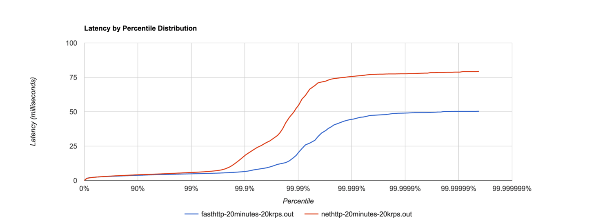
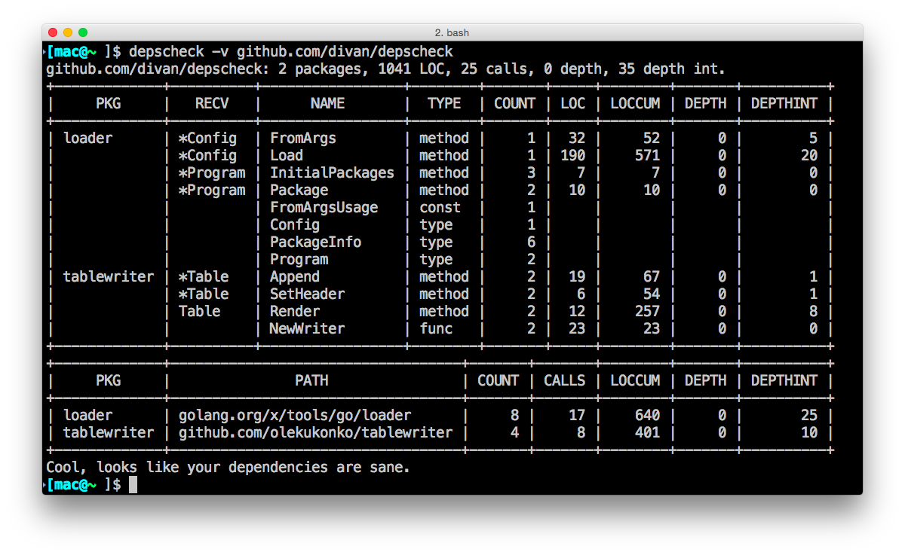
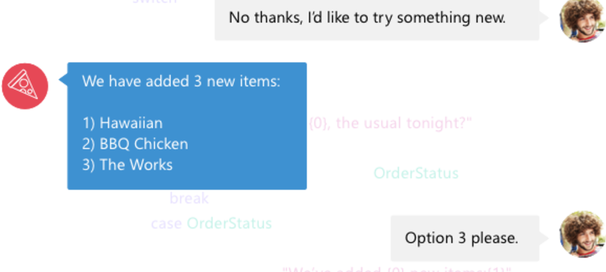
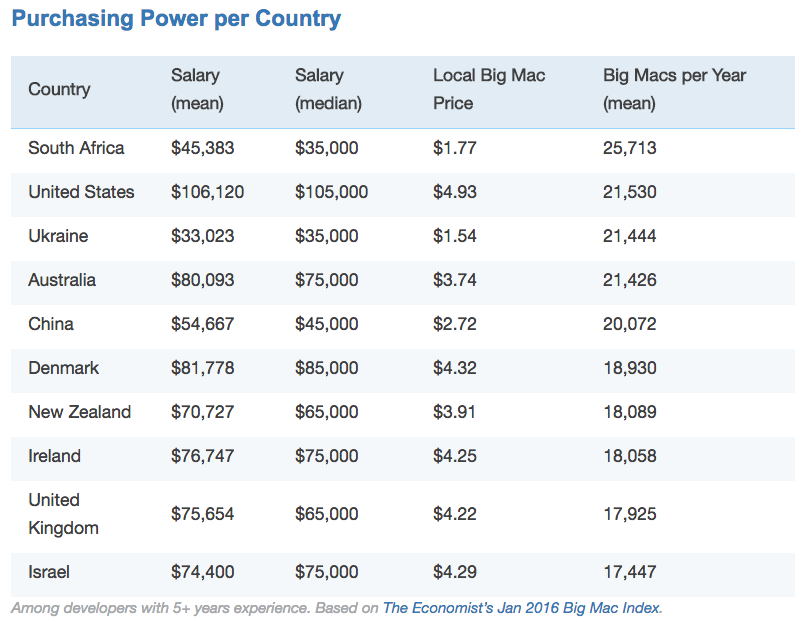

Hello World
CodeTengu Weekly 碼天狗週刊
CodeTengu Weekly 會在 GMT+8 時區的每個禮拜一早上 10:00 出刊，每一期會從目前的 curator 名單中選出三位來負責當期的內容，每一位 curator 各自負責不同的領域，如果你在這一期沒有看到自已感興趣的東西，說不定下一期就會有了。
你也可以瀏覽一下前幾期的內容，有價值的東西是不會過時的。
以下是目前的 curator 陣容：
- @vinta - I failed the Turing Test - 喜歡科幻小說，最近在讀「平面國」
- @saiday - Imnotyourson - 捷運飲食推廣委員會
- @tzangms - Oceanic / 人生海海 - 衝動型購物
- @fukuball - ImFukuball - 徵 Android 工程師，意者內洽
- @wancw - /ASD.?/ 工程師
- @adamp33 - 看棒球才是正職，副業是前端工程師
- @mingderwang
- @kako0507 - 熱愛嘗試新事物的前端工程師
- @chiahsien - Nelson
- @hiroshiyui - 非典型司書
- @uranusjr - Smaller Things - 聽說這是技術週刊，可是我不愛談技術怎麼辦
- @kkdai - 態度萬歲 - 喜歡 Golang 的略懂工程師
大家也可以 follow 一下 CodeTengu 的 Facebook、Twitter 或 GitHub，有很多 Weekly 看不到的內容。有任何建議或疑問也可以來 Gitter 聊一聊，歡迎亂入 👺
 @fukuball
@fukuball
Deep3D: Automatic 2D-to-3D Video Conversion with CNNs - 親愛的！我把 2D 影片變成 3D 影片了！
Machine Learning：中級
Deep3D 這篇論文很有趣，它使用了 Deep Convolutional Neural Networks 這個深度學習演算法來將一個 2D 的圖片轉換成 3D 的視覺感，如此就可以將一個 2D 影片自動轉成 3D 影片！原理就是利用機器學習來偵測每一幀圖片中物件的景深，如此就可以為不同景深的物件微調產生左右眼觀看這些物件在圖片中的位置，進而產生立體感（其實有些用 2D 攝影機拍攝的電影也是用這樣的原理，使用人工的方式調成 3D 的）。很有趣吧！我個人是覺得很有趣啦！大家可以去找他們的原始碼來玩玩看～
林軒田教授機器學習基石 Machine Learning Foundations 第 14 講學習筆記
Machine Learning：初級
上一講我們介紹了非線性轉換這個方法來將資料特徵值轉換到更高維的空間，如此我們就可以在高維空間做最訓練及最佳化，但在高維的空間卻會讓演算法有模擬到雜訊的可能，因此造成 Overfitting 的現象，除了用一些簡易的原則來避免 Overfitting，我們還可以使用正規化（Regularization）這個方法來限縮演算法最佳化的自由度，某種程度就可以避免 Overfitting 發生，就來看一下怎麼做到正規化吧～
Add Laravel Unit Tests Directly From Chrome - 用 Chrome 來寫 Laravel Unit Test !?
Laravel、PHP：初級
你能想像過用 Chrome 來寫單元測試（Unit Test）嗎？這個 Laravel 單元測試工具 Chrome Extension 可以用來幫助你快速寫好單元測試，只要裝了這個工具，它就可以錄下你在網頁的動作，並轉譯成 Laravel 的單元測試語法，很神奇吧！更好的是這個工具還有開源出來，如果想加什麼功能都可以自己加上去喔～
給網站初學者的建議：用 Ruby On Rails 非常辛苦，用 PHP 非常舒服
Web Programming、PHP：初級
有一陣子台灣開發者社群非常熱衷於 Rails，甚至推坑一些初學者去學 Rails，把寫程式說得跟變魔術一樣，實在是有一點不道德。這篇文章提供了幾個觀點，如果你是程式新手，對於別人推坑學習 Rails（或是其他網頁框架） 半信半疑，甚至去上了一些 Rails 的訓練課程還是有點一知半解的感覺，或許你可以考慮一下從心開始、重新出發，慢慢摸索 HTML、CSS 和 PHP，慢慢讓自己的技術踏實了再回頭碰這些網頁框架，也許就會豁然開朗了～
@adamp33
Google AMP 範例集
Google 在今年推出了手機版網頁加速計畫（Accelerated Mobile Pages, AMP）提供內容網站更佳的瀏覽速度。只要在 markup 上增加一些特殊用法（例如 <amp-img>），就可以套用。Google 的開發者傳教士 Sebastian Benz 整理出常見的一些 AMP 模組讓有需要的工程師能更輕鬆套用。
對於 SEO 也相當有幫助，能夠在搜尋結果中卡片式的樣式被突顯出來。

用圖片主色作為底色，讓延遲載入圖片感覺更快
Pinterest 在載入圖片前，會先用圖片的主色作為底色，讓使用者有提前載入的感覺，同時也讓頁面不致於單調。這樣的做法往往用後端來儲存圖片主色，現在純的做法可以做到，主要就是透過 CSS 的 filter:blur 來處理。
 @kkdai
@kkdai
Golang 1.6.0 1.5.3 重大安全漏洞：CVE request - Go - DLL loading, Big int
一個安全報告指出，目前的 Golang 1.6.0 與 1.5.3 有著以下兩個漏洞:
在 Windows 方面，呼叫 DLLs 是透過 "名稱"來 LoadLibrary．這使得 Golang 在呼叫 DLLs 有相當程度的危險，尤其如果 Golang App 如果放在"下載"的資料夾下．有可能會使用到惡意的DLL ，而不是預期的DLL．詳細的修改可以參考這裡 21428
使用 HTTPS client 或是 Go SSH server 都有可能遇到無窮迴圈而使系統陷入攻擊的危險．詳細的修改可以參考這裡 21533
以上兩個問題已經被修復了，Golang PM - Jason Buberel 決定會提供更新 Go 1.6.1 跟 Go 1.5.4 來給使用者更新．
目前 Golang 已經釋出了 1.6.1 跟 1.5.4 記得要更新．

Filippo Valsorda: 我只用四行程式碼卻讓 go-github 速度增加四倍
Filippo Valsorda @FiloSottile 在 Google 工具裡面中 go-github 發送了一個 fixed. 這個 fixed 只有四行的修改，卻可以把整個連線速度大大的提升了四倍以上．他是怎麼做到的？
原來 http.response.body 在做關閉的時候，如果發現裡面還有資料（使用 json.Decoder 會殘留 \n 在裡面）． 為了把資料清乾淨，就會把整個 HTTP 連線關閉重開．這樣就造成每次的 HTTP 連線無法重複使用，造就效能上的影響．經過了許多的討論過後， Bradfitz 也就是 Go net/http 的作者就跳出來說要把這個問題修回去 Golang 裡面，避免以後其他部分的影響．不過這部分的修改，已經趕不上 Go 1.6 之中了，大家要稍微注意一下．
如果必須使用 json.Decoder 該如何避免連線重開的效能消耗呢？
- 根據 mattn 的這篇文章 ，
json.Unmarshal並不會有類似問題．當然兩者使用情境不同，請自己多加考慮． - 如果你一定得使用
json.Decoder的話，可以使用 mattn 提供的小工具 go-drainclose ， 來將資料清乾淨使得連線不會被強制關閉．
延伸閱讀 :

Writing a very fast cache service with millions of entries in Go
這篇文章的出發點是想要幫團隊裡面架設高效與高吞吐的 cache service ，透過研究之後決定使用 Go 來開發，以下是他提出的一些小訣竅：
- 同步處理：
- 透過 goroutine 可以讓你的 cache service 有更高的效能，這邊也有建議透過 hash key 的方式來建立索引值，來存放 cache 的資料．
- 過期的暫存資料移除：
- 每筆資料需要有建立的時間標籤，透過時間標籤可以將過期的資料加以移除．
- 減少 GC（Garbage Collection）的產生：
- 如果有使用到
map， GC 會去接觸到裡面的每一個元素． 這就造成效能上的消耗． 最建議的方式就是在需要高效率處理的部份不要使用map．
- 如果有使用到
- 一個儲存大量資料的暫存區：
接下來介紹幾個好的 Golang 套件（取代原先內建的部分）:
大家可以參考一下

針對 Leftpad 的事件，在 Go 語言中有工具可以幫忙嗎?
前一段時間 Node.JS 社群發生了一個讓整個軟體業鬧哄哄的事件，就是熟知的 LeftPad 事件 ( 想知道詳細事件可以看 保哥懶人包 ) ． 當然，在 Go 裡面可以透過一些 Package Management Tool 來將一些重要的 Dependency Package 透過 Vendor 的方式複製起來．本篇討論到的是另外一個方向:
A little copying is better than a little dependency.
也就是如果你使用到的套件比較小，其實作者是比較建議你自己寫一套放著．那麼要如何去找出這樣的小套件呢? 作者就發表了他開發的小工具： Depscheck ． 一個可以查詢所有的相依套件，並且找出比較小的相依套件來建議你是否考慮要自己寫．
裡面用的邏輯也相當有趣： 如果使用到其它套件 ，或是你使用的被套件參考超過 3 次以上，或是程式行數超過 42 （宇宙的最終解答作為參考數 XD ）．就會被當作是不可移除的套件．
當然，這個工具也可以當作 Dependency Walker 的工具來使用．可以清楚地瞭解你寫的套件中相依套件的關係．推薦給大家．

微軟推出機器人架構 Bot Framework
微軟在這次 Build 2016 程式開發者大會上推出的機器人架構 ( Bot Framework ), 透過官方提供的範例程式 ( 目前僅支援 C# 與 Node.Js ) 可以在 30 分鐘內建立出一個 Slack 機器人.
接下來稍微解釋一下， Bot Framework 本身究竟提供了哪些功能:
- 透過 Bot Connector 連接各種 IM：
- 提供與各種 IM 的連接方式，其中包括了 ( Slack, Skype, Telegram, Email, SMS, Email )
- 建立對話（ Dialog）來處理不同的指令：
- 透過建立對話的方式，可以相當容易讓你的機器人處理多個指令．每一種指令都被視為是一個對話，並且可以針對每個對話處理他的邏輯與流程．
- 透過自然語言的處理方式建立更口語化的對話：
- 透過微軟提供的 LUIS ( Language Understanding Intelligent Service ) 可以讓你跟機器人的對話變得自然．也讓機器人處理各種語句的能力能夠更強． 比如說： 排定會議可以說成 「幫我預約明天三點的會議」，當然也可已訓練之後說成「幫我排定明天三點會議」． 簡單的說，就是透過自己建立的 LUIS 模型，你可以不用修改程式碼，就可以擴充你的機器人對各種語言的處理能力．
透過這三個主要的架構，雖然你還無法直接建立類似 Siri 一樣的小幫手，但是你可以很輕易地建立「訂披薩小幫手」，「客服小幫手」類似的機器人．
此外，臉書也在 F8 公布了他們之前收購的語音與文字自然語言平台 wit.ai 將要支援 FB Messanger ．大家可以看看．
Two Legs Bad

Stack Overflow Developer Survey Results 2016 - 開發者身家調查
今年 Stack Overflow 對大約 56000 名開發者進行了一個有趣的問券調查，包含了他們的職位、性別、教育程度、使用的技術、薪資等等... 大致上讓我們可以了解這個世界的開發者大概的樣貌（抽象的樣貌啦），至於為何我會把這篇放在 Two Legs Bad，等你看到薪資這個部份就知道了。中國的開發者平均年薪有 54000 鎂，中位數位於 45000 鎂！台灣的開發者應該兩個數值都遠低於這個數字吧！大家好好感受一下身為無產階級碼農的感覺吧～
Otaku is the New Sexy
被冠上閱覽注意的動物作品
ヤスミーン (茉莉)
看起來極凶惡的這部「YASUMIN」，網上暫時翻成「茉莉」(Jasmin)。目前在ニコニコ上有完整的連載。
和封閉的人類社會不同，動物社會的種族階級明確且僵固，建立在食物鏈的鐵則之上，作為「食物」的草食動物沒有任何翻轉階級的機會，只能盡可能的用數量來延續基因的存亡，這部作品描述一個由獅群建立的封建王國，極盡所能的奴役階級比自己低下的動物，草食動物以勞力換取「不被當做食物」的資格，而小型的肉食動物也可以付出勞力換取固定的食物配給。被奴役的草食動物地位比奴隸還卑賤，即使不被獵食，也有可能因為好玩、礙事等各種原因，被肉食動物隨意的殺死。read more ...